Sobre AI - Coffee Pests
AI - Coffee Pests es una herramienta capas de detector plagas en plantas de café, haciendo uso de una Red Neuronal alimentada por un dataset que reconoce las 3 plagas mas comunes que atacan a esta planta, las cuales son Roya, Antracnosis y Ojo de gallo, haciendo uso de Tensorflow, ML Kit y Android OS.
Primeros Pasos
Para comenzar dirige a nuestro repositorio, y descarga la aplicación en el enlace correspondiente, y siga los pasos que a continuación se indican para una correcta instalación.
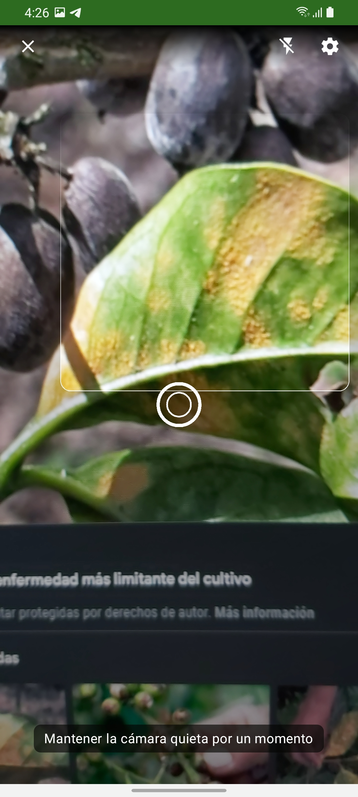
Instalación
Dentro de nuestro dispositivo ubicamos el gestor de archivos (En este caso se está utilizando un dispositivo Samsung), tendremos que localizar la .apk llamada ai-coffeepestsV1_0_1.
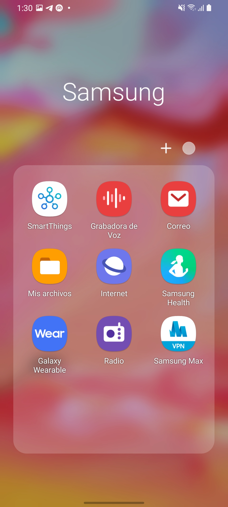 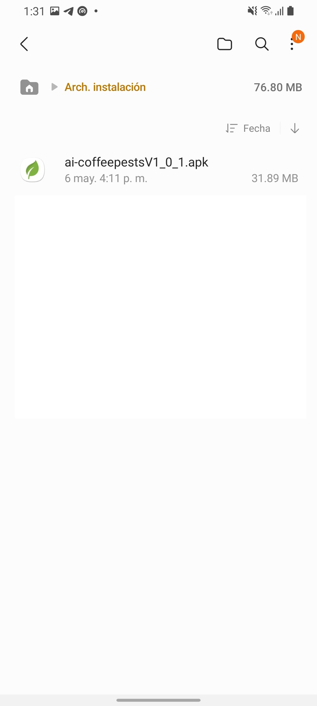
Al presionar una vez el .apk, se nos mostraran una serie de diálogos como los siguientes, deberá presionar las opciones que se muestran a continuación (Los diálogos podrían variar según marca y/o SO).
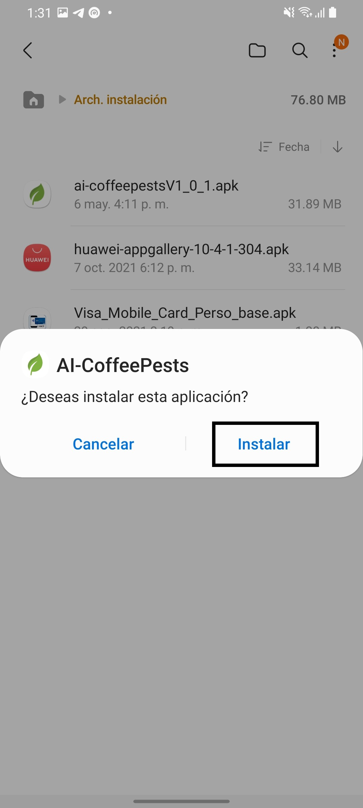 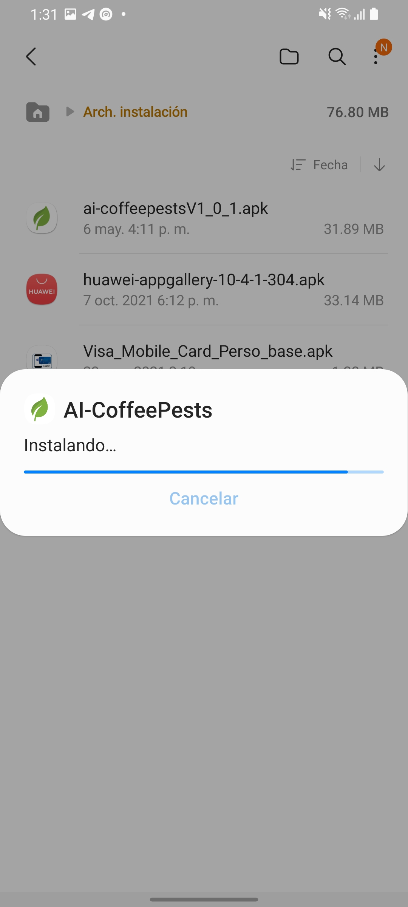 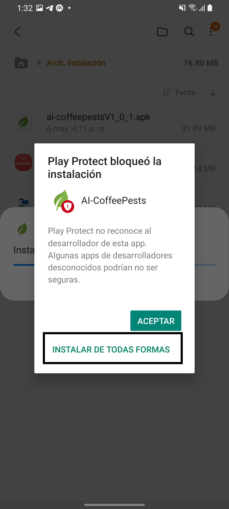 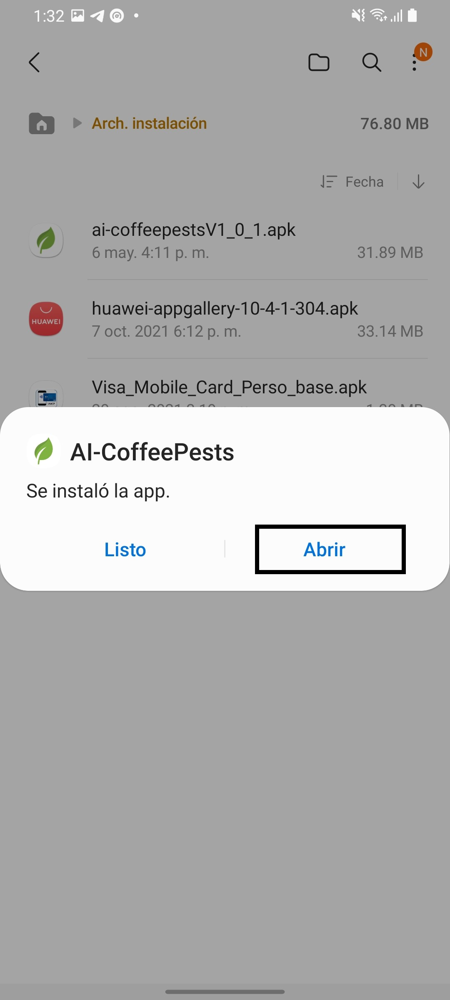
Nota: Las advertencias de Play Store, están presentes debido a que el apk no está firmada por Google como una aplicación de confianza, debido a que es necesario subir la aplicación para poder tener esta característica antes mencionada.
Ahora ya estamos listos para ejecutar nuestra aplicación, buscamos dentro de nuestras aplicaciones AI-CoffeePests y ábrela, al ser la primera vez que nuestra aplicación es lanzada dentro del dispositivo se te desplegara una guía rápida con lo que nuestra aplicación puede realizar y para lo que esta desarrollada.
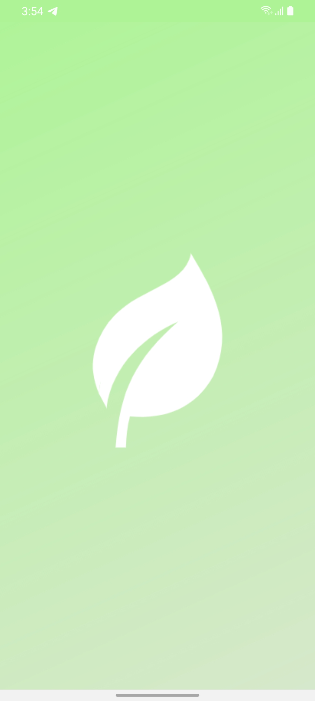 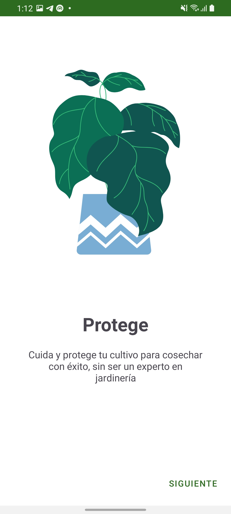 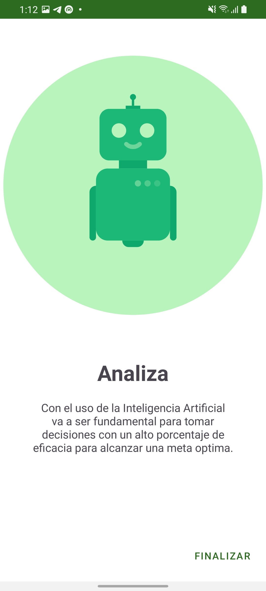
De igual forma se tiene que otorgar permisos para poder acceder a la cámara del dispositivo, dado que esta nos ayudará a obtener la información que será posteriormente procesada por Tensorflow Lite y ML Kit de Google.
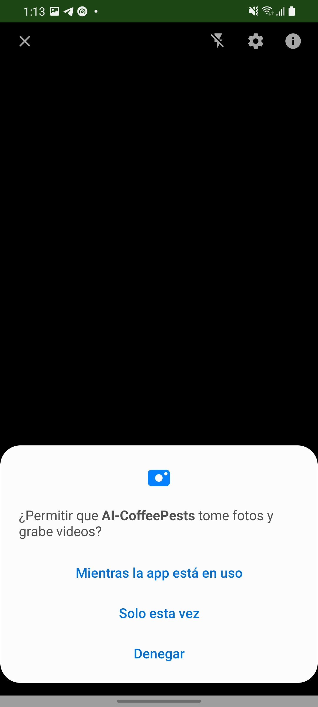
¿Como funciona?
Para utilizar AI-CoffeePests es muy fácil, solo tendrás que apuntar con la cámara la planta que quieras analizar. Y la UI de la aplicación te indicará como estará el estado de la detección del objeto antes de hacer uso de internet para poder recabar la información a mostrarle al usuario.

Cuando la GPU de TensorFlow ya haya detectado un objeto de forma visual se estaré agregando un recuadro que indicara al usuario el objeto que se está seleccionado y se procederá a visualizar una progressbar donde indicara que se esta buscando al objeto dentro de nuestro dataset, todo esto se hace en segundo plano haciendo uso de ML Kit y Tensorflow Lite,Tal y como se muestra en la siguiente vista.
En el momento en el que Tensorflow Lite y ML Kit tienen el resultado de lo que se está visualizando se mostrara el resultado en un BottomSheetDialogFragment con el valor de salida, tal y como se ve a continuación.
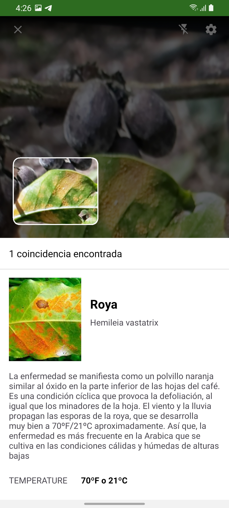
Al final de todas las búsquedas siempre se adjunta un enlace para obtener más información de la plaga en cuestión.
Configuración
AI-CoffeePests cuenta con un apartado de configuraciones desde las cuales podremos editar los siguientes parámetros:
- * Activar/Desactivar búsqueda automática
- * Tiempo de confirmación antes de comparar contra nuestra dataset
Y se visualiza de la siguiente forma.
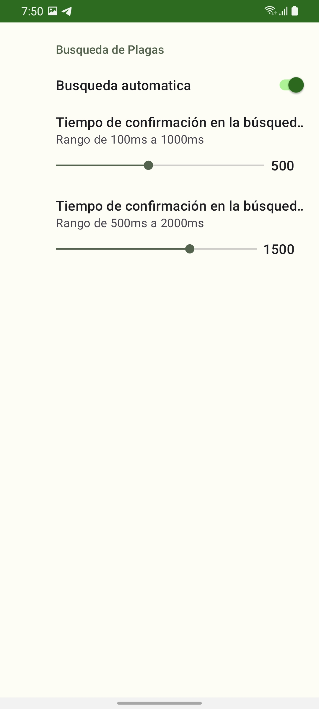
Requisitos
AI - Coffee Pests v1.0.1 requiere Android Lollipop (API 21) o superior.